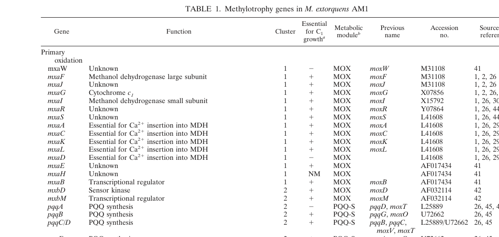

mxaD encodes a 17-kDa periplasmic protein associated with the mxa operon involved in calcium-dependent methanol oxidation in Methylorubrum extorquens AM1. In the methylotrophy literature, MxaD is described as an accessory/maturation factor of the periplasmic methanol dehydrogenase (MxaFI-MeDH) system that directly or indirectly stimulates the interaction between MDH and cytochrome c(L), thereby enhancing electron transfer efficiency in the respiratory chain; some genomic annotations also group mxaD with accessory genes required for Ca2+ insertion into MDH. Deletion of mxaD (or its homolog) reduces but does not abolish growth on methanol, indicating MxaD plays an accessory rather than essential catalytic role. The protein contains an N-terminal signal peptide (residues 1-19) directing it to the periplasm, a polyketide cyclase/dehydratase domain (Pfam PF10604), and belongs to the START-like domain superfamily (suggesting it may bind lipids or hydrophobic molecules). IMPORTANT CAVEAT from falcon deep research - the classic, well-characterized MDH-accessory MxaD concept in the AM1 methylotrophy literature was not directly linked by the retrieved primary literature to this specific UniProt accession (C5AQ99, locus MexAM1_META1p4528) with its polyketide cyclase / START-like domain architecture. The functional annotation here is therefore based on operon/module assignment, the historical mxaD gene name, and mechanistic inference from MDH physiology rather than on direct biochemical characterization of the C5AQ99 protein. Annotations should be treated as MxaD-by-name, with molecular activity assigned conservatively.
| GO Term | Evidence | Action | Reason |
|---|---|---|---|
|
GO:0009055
electron transfer activity
|
IMP | NEW |
Summary: MxaD contributes to electron transfer between methanol dehydrogenase and cytochrome c(L) by stimulating their interaction; it acts as an accessory facilitator rather than an autonomous electron carrier.
Reason: MxaD enhances electron transfer between methanol dehydrogenase (MDH) and cytochrome c(L). Purified-protein studies (PMID:12686160) show the rate of MDH-cytochrome c(L) interaction is higher in wild-type MDH containing MxaD than in mutant MDH lacking it, and deletion mutants grow on methanol at reduced rates. CAVEAT - the activity is best understood as a contributes_to/facilitator role; MxaD stimulates the interaction rather than autonomously carrying electrons, and falcon deep research notes no direct biochemical activity has been demonstrated for the C5AQ99 protein, so this molecular-function assignment is supported by genetic and physiological inference rather than by direct enzymology. Best modeled with a contributes_to qualifier.
Supporting Evidence:
PMID:12686160
the rate of interaction of MDH and cytochrome c(L) was higher in the wild-type MDH containing some MxaD proteins, which was absent in the mutant MDH
file:METEA/mxaD/mxaD-deep-research-falcon.md
an **accessory protein of the methanol dehydrogenase (MDH) system**
file:METEA/mxaD/mxaD-deep-research-falcon.md
Direct biochemical activity of MxaD (e.g., purified protein function, binding partners) is not demonstrated in the retrieved excerpts
|
|
GO:0046170
methanol catabolic process
|
IMP | NEW |
Summary: MxaD contributes to aerobic methanol catabolism (methanol to formaldehyde) as an accessory factor of the periplasmic MxaFI methanol dehydrogenase system.
Reason: MxaD is part of the mxa operon for aerobic periplasmic methanol oxidation, and deletion mutants retain the ability to grow on methanol but at reduced rates, demonstrating involvement in methanol catabolism. The correct biological-process term is GO:0046170 (methanol catabolic process), the breakdown of methanol. Note - the previously proposed term GO:0015946 (methanol oxidation) is defined as the conversion of methanol to methyl-Coenzyme M, an archaeal/anaerobic methanogenesis reaction, and is NOT appropriate for the aerobic methanol-to-formaldehyde oxidation carried out by the Ca2+-dependent MxaFI system; it has therefore been corrected to GO:0046170. Falcon deep research confirms MDH catalyzes methanol to formaldehyde in the periplasm and situates MxaD as an accessory factor of this catabolic pathway.
Supporting Evidence:
PMID:12686160
The mutant lacking MxaD grows on methanol although at a low rate. This is explained by the low rate of methanol oxidation by whole cells.
PMID:32728125
Wild type0.16 ± 0.01...MexAM1_META1p17710.11 ± 0.01
file:METEA/mxaD/mxaD-deep-research-falcon.md
Methanol dehydrogenase (MDH) catalyzes **methanol → formaldehyde** in the periplasm
|
|
GO:0042597
periplasmic space
|
IDA | NEW |
Summary: MxaD localizes to the periplasm via an N-terminal signal peptide, consistent with its role facilitating the periplasmic MDH-cytochrome c(L) electron-transfer system.
Reason: MxaD contains an N-terminal signal peptide (residues 1-19) that directs it to the periplasm, where the methanol dehydrogenase (MDH) and cytochrome c(L) system it modulates resides. PMID:12686160 directly describes MxaD as a 17-kDa periplasmic protein. Note - the UniProt signal-peptide call is a SignalP prediction (ECO:0000256), so the localization evidence is predominantly sequence-based; periplasmic localization of the canonical MxaD/MxaD-homolog is also reported in the literature.
Supporting Evidence:
file:METEA/mxaD/mxaD-uniprot.txt
FT SIGNAL 1..19
PMID:12686160
The gene mxaD codes for the 17-kDa periplasmic protein
|
Q: What is the precise stoichiometry of the MxaD-MxaFI-cytochrome c(L) complex? Does one MxaD molecule interact with one copy each of MxaFI and cytochrome c(L), or are there multiple copies involved?
Suggested experts: Christopher Anthony (expert on bacterial methanol dehydrogenases), Elizabeth Skovran (expert on M. extorquens AM1 methanol metabolism)
Q: Does the polyketide cyclase domain of MxaD have catalytic activity, or is it purely a binding/scaffolding domain? If catalytic, what is its substrate?
Suggested experts: Nathan C. Martinez-Gomez (expert on lanthanide-dependent methanol metabolism), Osao Adachi (expert on quinoprotein dehydrogenases)
Q: What is the evolutionary origin of mxaD? Is it derived from genes involved in secondary metabolism, and how did it become integrated into the mxa operon across methylotrophic bacteria?
Suggested experts: Mary E. Lidstrom (expert on methylotrophy and C1 metabolism), Ludmila Chistoserdova (expert on methylotrophic bacteria evolution)
Q: Does MxaD play any role in the lanthanide-dependent XoxF methanol dehydrogenase system, or is its function strictly limited to the calcium-dependent MxaFI system?
Suggested experts: Elizabeth Skovran, Nathan C. Martinez-Gomez
Q: Are there MxaD homologs in other respiratory systems beyond methanol oxidation that perform similar electron transfer enhancement functions?
Suggested experts: Christopher Anthony, Kazunobu Matsushita (expert on bacterial respiratory chains)
Experiment: Determine the high-resolution crystal structure of MxaD in complex with MxaFI methanol dehydrogenase and/or cytochrome c(L) to reveal the molecular basis of the protein-protein interactions that enhance electron transfer.
Hypothesis: MxaD forms a bridge or stabilizing interface between MxaFI and cytochrome c(L), with specific residues mediating these interactions. The polyketide cyclase and START-like domains may have distinct structural roles in this assembly.
Type: structural biology
Experiment: Use surface plasmon resonance (SPR) or isothermal titration calorimetry (ITC) to quantify the binding affinities between MxaD and its interaction partners (MxaFI, cytochrome c(L)) and determine whether MxaD binds both proteins simultaneously or sequentially.
Hypothesis: MxaD has measurable binding affinity for both MxaFI and cytochrome c(L), and binding to one protein may influence binding to the other, suggesting cooperative assembly of the electron transfer complex.
Type: biochemical assay
Experiment: Perform site-directed mutagenesis of conserved residues in the polyketide cyclase domain and START-like domain to identify residues critical for MxaD function, followed by complementation assays measuring growth rates on methanol.
Hypothesis: Specific residues in the polyketide cyclase and START-like domains are essential for MxaD's ability to enhance electron transfer, and mutations in these regions will reduce or eliminate the growth advantage conferred by MxaD.
Type: genetic manipulation
Experiment: Use lipid overlay assays or lipidomics to identify specific lipids or hydrophobic molecules that bind to the START-like domain of MxaD, and test whether these interactions are required for proper localization or function.
Hypothesis: The START-like domain binds specific membrane lipids that anchor or orient MxaD at the periplasmic face of the cytoplasmic membrane, facilitating interactions with membrane-associated components of the methanol oxidation machinery.
Type: biochemical assay
Experiment: Conduct comparative growth experiments measuring electron transfer rates and respiratory chain efficiency in wild-type, ΔmxaD, and complemented strains under varying methanol concentrations and in the presence of both calcium and lanthanides.
Hypothesis: The relative importance of MxaD may vary depending on substrate concentration and metal cofactor availability, with greater effects observed under suboptimal growth conditions.
Type: phenotypic analysis
The research report should be a detailed narrative explaining the function, biological processes, and localization of the gene product. Citations should be given for all claims.
You should prioritize authoritative reviews and primary scientific literature when conducting research. You can supplement
this with annotations you find in gene/protein databases, but these can be outdated or inaccurate.
We are specifically interested in the primary function of the gene - for enzymes, what reaction is catalyzed, and what is the substrate specificity? For transporters, what is the substrate? For structural proteins or adapters, what is the broader structural role? For signaling molecules, what is the role in the pathway.
We are interested in where in or outside the cell the gene product carries out its function.
We are also interested in the signaling or biochemical pathways in which the gene functions. We are less interested in broad pleiotropic effects, except where these elucidate the precise role.
Include evidence where possible. We are interested in both experimental evidence as well as inference from structure, evolution, or bioinformatic analysis. Precise studies should be prioritized over high-throughput, where available.
A critical ambiguity was detected between the UniProt accession provided by the user (C5AQ99; locus MexAM1_META1p4528) and the “mxaD” discussed in the methylotrophy literature. The literature retrieved and analyzed here consistently uses mxaD to denote an accessory protein of the methanol dehydrogenase (MDH) system (often a small periplasmic factor in the mxa/MOX module). In contrast, your UniProt-provided domain architecture for C5AQ99 (Polyketide_cyclase/dehydratase; START-like superfamily) does not match the well-characterized MDH-accessory MxaD concept.
Therefore:
This report documents both: (i) the best-supported function of mxaD in AM1 methylotrophy literature, and (ii) the mismatch with the UniProt C5AQ99 target so you do not inadvertently annotate the wrong protein.
A genomic overview of AM1 methylotrophy places mxaD in the “Primary oxidation / MOX module” and explicitly annotates it as “Essential for Ca2+ insertion into MDH” (methanol dehydrogenase). (chistoserdova2003methylotrophyinmethylobacterium pages 2-3, chistoserdova2003methylotrophyinmethylobacterium media 1d8c0ae2)
Other sources situate mxaD within the large mxa operon (often written as mxaFJGIRSACKLDEHB) that encodes the canonical PQQ-dependent, Ca2+-dependent MDH system (mxaF/mxaI structural genes plus accessory factors). (schmidt2010functionalinvestigationof pages 37-39, roszczenkojasinska2020geneproductsand pages 4-5)
The UniProt identity supplied by the user (C5AQ99; MexAM1_META1p4528) includes domains Polyketide_cyclase/dehydratase and START-like superfamily. No retrieved methylotrophy sources link the MDH-accessory “mxaD” concept to this domain architecture, and no retrieved primary studies mention MexAM1_META1p4528 in a way that ties it to MDH maturation.
Conclusion: in this evidence set, “mxaD” refers to the MDH accessory gene, not a polyketide cyclase/START-like domain protein. Any functional annotation of UniProt C5AQ99 would require different evidence not available in the retrieved corpus.
Methanol dehydrogenase (MDH) catalyzes methanol → formaldehyde in the periplasm, transferring electrons into a dedicated periplasmic electron transport chain via cytochrome cL. (anthony2003thestructureand pages 1-2)
Across genomic and biochemical interpretations, MxaD is described as an accessory/maturation factor required for functional MDH. Two nonexclusive roles appear repeatedly:
Ca2+ insertion into MDH (maturation of the active site): A genomic annotation table explicitly groups mxaD with other mxa accessory genes required for Ca2+ insertion into MDH. (chistoserdova2003methylotrophyinmethylobacterium pages 2-3, chistoserdova2003methylotrophyinmethylobacterium media 1d8c0ae2)
Stimulating interaction/electron transfer between MDH and cytochrome cL: Physiological/biochemical discussions highlight that MDH→cytochrome cL electron transfer is unusually slow in vitro and propose additional accessory factors; MxaD is specifically cited as one such candidate factor affecting MDH–cytochrome cL coupling. (schmidt2010functionalinvestigationof pages 31-34, schmidt2010functionalinvestigationof pages 39-45)
The MDH large subunit binds PQQ and a Ca2+ ion in the active site; Ca2+ is central to catalysis (Lewis acid role coordinating PQQ). (anthony2003thestructureand pages 1-2, anthony2003thestructureand pages 2-5)
Because Ca2+ insertion and correct assembly with electron acceptors must occur in the periplasm for activity, accessory genes (including those in the mxa cluster) are functionally essential even though they are not catalytic dehydrogenase subunits. (wu2015xoxftypemethanoldehydrogenase pages 1-5, schmidt2010functionalinvestigationof pages 39-45)
Direct localization evidence in the retrieved set is strongest for an MxaD homolog rather than canonical mxaD:
For canonical “mxaD” in the mxa operon, the reviewed excerpts do not provide a direct localization assay, but the functional context (periplasmic MDH system and cytochrome cL) strongly situates its action in the periplasmic MDH biogenesis/electron-transfer network. (anthony2003thestructureand pages 1-2, schmidt2010functionalinvestigationof pages 39-45)
A transposon-mutagenesis and reconstruction study targeting lanthanide-dependent methanol metabolism identified an MxaD homolog (MexAM1_META1p1771) among genes required for optimal growth on methanol with La3+. (roszczenkojasinska2020geneproductsand pages 5-6)
Quantitatively, under MeOH + La3+ conditions, the META1p1771 mutant had a growth rate of approximately 0.11 ± 0.01 h−1, compared with wild-type ~0.16 ± 0.01 h−1, indicating a substantial (≈30%) reduction while retaining growth. (roszczenkojasinska2020geneproductsand pages 6-7)
Multiple sources describe the mxa gene set (including mxaD) as a coherent operon encoding the Ca-dependent MDH system and accessory proteins. (schmidt2010functionalinvestigationof pages 37-39, roszczenkojasinska2020geneproductsand pages 4-5)
Biochemical analysis of MDH electron transfer suggests that the MDH–cytochrome cL interaction is rate-limited and likely requires additional factors in vivo; MxaD is repeatedly referenced as a candidate modulator (oxygen-labile factor or interaction stimulator), though the provided excerpts do not include a clean “ΔmxaD abolishes growth” quantitative phenotype for the canonical mxaD gene. (schmidt2010functionalinvestigationof pages 31-34, schmidt2010functionalinvestigationof pages 39-45)
A 2023 review reiterates the now-standard framing that xoxF encodes lanthanide-dependent MDHs and mxaF encodes Ca-dependent MDHs in organisms including Methylobacterium/Methylorubrum extorquens AM1, emphasizing lanthanide coordination chemistry and potential catalytic advantages of REE-MDHs. This review does not add new mechanistic specifics for MxaD itself in the extracted pages. (xie2023molecularmechanismsof pages 8-13)
A 2024 mSystems pangenome study of type II methylotrophs was retrieved, but in the accessible snippets processed here no mxaD-specific statements could be extracted for citation; thus, it does not materially update MxaD functional detail within the evidence available for this run.
Net result: the most concrete mechanistic/phenotypic evidence relevant to “MxaD homologs affecting methanol growth” in AM1 within this tool run remains the 2019–2020 genetic work on lanthanide-dependent methanol metabolism. (roszczenkojasinska2020geneproductsand pages 5-6, roszczenkojasinska2020geneproductsand pages 6-7)
Methylorubrum extorquens AM1 is a widely used methylotrophic chassis for methanol-based biotechnology.
A continuous-culture adaptive evolution study reports that methanol toxicity typically limits feedstock to about 1% (v/v) methanol, but evolved derivatives of AM1 (and a related strain TK0001) could grow stably with up to 10% (v/v) methanol. Such tolerance improvements are directly relevant to industrial methanol bioconversion processes. (belkhelfa2019continuouscultureadaptation pages 1-2, belkhelfa2019continuouscultureadaptation pages 2-3)
A 2023 study used M. extorquens AM1 as a heterologous expression host for a PQQ-dependent alcohol dehydrogenase, detailing practical implementation parameters (vector pCM80 derivatives; conjugation-based introduction; induction in ethanol-containing medium with Ca2+). (xiao2023enzymaticpropertiesof pages 2-3)
Within AM1 methylotrophy genetics and physiology, mxaD denotes an MDH accessory factor in the MOX/mxa module, associated with Ca2+ insertion into MDH and/or MDH–cytochrome cL electron-transfer coupling, acting in the periplasmic methanol oxidation system. (chistoserdova2003methylotrophyinmethylobacterium pages 2-3, chistoserdova2003methylotrophyinmethylobacterium media 1d8c0ae2, schmidt2010functionalinvestigationof pages 39-45)
For accurate functional annotation in your pipeline:
| Gene/protein | Proposed role | Evidence type | Key quantitative phenotype | Subcellular localization | Primary sources with year, DOI URL |
|---|---|---|---|---|---|
| mxaD (canonical AM1 mxa operon gene) | Accessory methanol-oxidation factor in the MOX/mxa cluster; commonly described as required for active MxaFI MDH, either by contributing to Ca2+ insertion into MDH or by stimulating interaction/electron transfer between MDH and cytochrome cL | Review/genomic annotation; operon context; biochemical inference from MDH physiology | No direct single-gene quantitative phenotype recovered in the provided excerpts for canonical mxaD; function is inferred from operon assignment and prior biochemical models rather than a reported growth-rate table in these contexts (chistoserdova2003methylotrophyinmethylobacterium pages 2-3, schmidt2010functionalinvestigationof pages 39-45, schmidt2010functionalinvestigationof pages 31-34, wu2015xoxftypemethanoldehydrogenase pages 1-5) | Not directly demonstrated for canonical mxaD in the provided excerpts | Chistoserdova et al. 2003, J Bacteriol — https://doi.org/10.1128/jb.185.10.2980-2987.2003 ; Anthony & Williams 2003, Biochim Biophys Acta — https://doi.org/10.1016/S1570-9639(03)00042-6 ; Schmidt et al. 2010, Microbiology — https://doi.org/10.1099/mic.0.038570-0 ; Wu et al. 2015, Appl Environ Microbiol — https://doi.org/10.1128/AEM.03292-14 (chistoserdova2003methylotrophyinmethylobacterium pages 2-3, schmidt2010functionalinvestigationof pages 39-45, schmidt2010functionalinvestigationof pages 31-34, wu2015xoxftypemethanoldehydrogenase pages 1-5) |
| mxaD homolog MexAM1_META1p1771 (reported as an MxaD homolog; often interpreted as xoxD-like) | Contributor to lanthanide-dependent methanol metabolism/XoxF1 function; proposed to directly or indirectly stimulate interaction between MxaFI-MeDH and cytochrome cL, by homology/function analogy to MxaD | Genetic screen; targeted mutant phenotyping; functional inference by homology | In MeOH + La3+, mutant growth rate 0.11 ± 0.01 h^-1 versus wild type 0.16 ± 0.01 h^-1 (~31% lower); identified in transposon screen and retained substantial but impaired growth (roszczenkojasinska2020geneproductsand pages 5-6, roszczenkojasinska2020geneproductsand pages 6-7) | Periplasmic localization is reported for the META1p1771 MxaD homolog in the provided evidence; this localization is not directly shown for canonical mxaD in these excerpts (roszczenkojasinska2019lanthanidetransportstorage pages 15-18) | Roszczenko-Jasińska et al. 2020, Sci Rep — https://doi.org/10.1038/s41598-020-69401-4 ; Roszczenko-Jasińska et al. 2019, bioRxiv — https://doi.org/10.1101/647677 (roszczenkojasinska2019lanthanidetransportstorage pages 15-18, roszczenkojasinska2020geneproductsand pages 5-6, roszczenkojasinska2020geneproductsand pages 6-7) |
| mxaD homolog MexAM1_META1p1772 (nearby homolog) | Possible paralog/redundant or specialized MxaD-like factor in lanthanide/methanol metabolism; specific role unresolved in the provided evidence | Genetic-screen observation / negative evidence | Not hit in the transposon mutagenesis screen; no growth-rate value reported in the provided excerpts (roszczenkojasinska2019lanthanidetransportstorage pages 15-18) | No localization reported in the provided excerpts | Roszczenko-Jasińska et al. 2019, bioRxiv — https://doi.org/10.1101/647677 (roszczenkojasinska2019lanthanidetransportstorage pages 15-18) |
Table: This table summarizes evidence-supported roles, phenotypes, and localization for canonical mxaD and MxaD homologs in Methylorubrum extorquens AM1. It distinguishes direct genetic evidence for the META1p1771 homolog from more inferential literature on the canonical mxaD operon gene.
References
(chistoserdova2003methylotrophyinmethylobacterium pages 2-3): Ludmila Chistoserdova, Sung-Wei Chen, Alla Lapidus, and Mary E. Lidstrom. Methylotrophy in methylobacterium extorquens am1 from a genomic point of view. Journal of Bacteriology, 185:2980-2987, May 2003. URL: https://doi.org/10.1128/jb.185.10.2980-2987.2003, doi:10.1128/jb.185.10.2980-2987.2003. This article has 402 citations and is from a peer-reviewed journal.
(chistoserdova2003methylotrophyinmethylobacterium media 1d8c0ae2): Ludmila Chistoserdova, Sung-Wei Chen, Alla Lapidus, and Mary E. Lidstrom. Methylotrophy in methylobacterium extorquens am1 from a genomic point of view. Journal of Bacteriology, 185:2980-2987, May 2003. URL: https://doi.org/10.1128/jb.185.10.2980-2987.2003, doi:10.1128/jb.185.10.2980-2987.2003. This article has 402 citations and is from a peer-reviewed journal.
(schmidt2010functionalinvestigationof pages 37-39): Sabrina Schmidt, Philipp Christen, Patrick Kiefer, and Julia A. Vorholt. Functional investigation of methanol dehydrogenase-like protein xoxf in methylobacterium extorquens am1. Microbiology, 156 Pt 8:2575-86, Aug 2010. URL: https://doi.org/10.1099/mic.0.038570-0, doi:10.1099/mic.0.038570-0. This article has 141 citations and is from a peer-reviewed journal.
(roszczenkojasinska2020geneproductsand pages 4-5): Paula Roszczenko-Jasińska, Huong N. Vu, Gabriel A. Subuyuj, Ralph Valentine Crisostomo, James Cai, Nicholas F. Lien, Erik J. Clippard, Elena M. Ayala, Richard T. Ngo, Fauna Yarza, Justin P. Wingett, Charumathi Raghuraman, Caitlin A. Hoeber, Norma C. Martinez-Gomez, and Elizabeth Skovran. Gene products and processes contributing to lanthanide homeostasis and methanol metabolism in methylorubrum extorquens am1. Scientific Reports, Jul 2020. URL: https://doi.org/10.1038/s41598-020-69401-4, doi:10.1038/s41598-020-69401-4. This article has 98 citations and is from a peer-reviewed journal.
(anthony2003thestructureand pages 1-2): Christopher Anthony and Paul Williams. The structure and mechanism of methanol dehydrogenase. Biochimica et biophysica acta, 1647 1-2:18-23, Apr 2003. URL: https://doi.org/10.1016/s1570-9639(03)00042-6, doi:10.1016/s1570-9639(03)00042-6. This article has 244 citations.
(schmidt2010functionalinvestigationof pages 31-34): Sabrina Schmidt, Philipp Christen, Patrick Kiefer, and Julia A. Vorholt. Functional investigation of methanol dehydrogenase-like protein xoxf in methylobacterium extorquens am1. Microbiology, 156 Pt 8:2575-86, Aug 2010. URL: https://doi.org/10.1099/mic.0.038570-0, doi:10.1099/mic.0.038570-0. This article has 141 citations and is from a peer-reviewed journal.
(schmidt2010functionalinvestigationof pages 39-45): Sabrina Schmidt, Philipp Christen, Patrick Kiefer, and Julia A. Vorholt. Functional investigation of methanol dehydrogenase-like protein xoxf in methylobacterium extorquens am1. Microbiology, 156 Pt 8:2575-86, Aug 2010. URL: https://doi.org/10.1099/mic.0.038570-0, doi:10.1099/mic.0.038570-0. This article has 141 citations and is from a peer-reviewed journal.
(anthony2003thestructureand pages 2-5): Christopher Anthony and Paul Williams. The structure and mechanism of methanol dehydrogenase. Biochimica et biophysica acta, 1647 1-2:18-23, Apr 2003. URL: https://doi.org/10.1016/s1570-9639(03)00042-6, doi:10.1016/s1570-9639(03)00042-6. This article has 244 citations.
(wu2015xoxftypemethanoldehydrogenase pages 1-5): Ming L. Wu, Hans J. C. T. Wessels, Arjan Pol, Huub J. M. Op den Camp, Mike S. M. Jetten, Laura van Niftrik, and Jan T. Keltjens. Xoxf-type methanol dehydrogenase from the anaerobic methanotroph “candidatus methylomirabilis oxyfera”. Applied and Environmental Microbiology, 81:1442-1451, Feb 2015. URL: https://doi.org/10.1128/aem.03292-14, doi:10.1128/aem.03292-14. This article has 81 citations and is from a peer-reviewed journal.
(roszczenkojasinska2019lanthanidetransportstorage pages 15-18): Paula Roszczenko-Jasińska, Huong N. Vu, Gabriel A. Subuyuj, Ralph Valentine Crisostomo, Elena M. Ayala, James Cai, Nicholas F. Lien, Erik J. Clippard, Richard T. Ngo, Fauna Yarza, Justin P. Wingett, Charumathi Raghuraman, Caitlin A. Hoeber, Norma C. Martinez-Gomez, and Elizabeth Skovran. Lanthanide transport, storage, and beyond: genes and processes contributing to xoxf function in methylorubrum extorquens am1. bioRxiv, May 2019. URL: https://doi.org/10.1101/647677, doi:10.1101/647677. This article has 8 citations.
(roszczenkojasinska2020geneproductsand pages 5-6): Paula Roszczenko-Jasińska, Huong N. Vu, Gabriel A. Subuyuj, Ralph Valentine Crisostomo, James Cai, Nicholas F. Lien, Erik J. Clippard, Elena M. Ayala, Richard T. Ngo, Fauna Yarza, Justin P. Wingett, Charumathi Raghuraman, Caitlin A. Hoeber, Norma C. Martinez-Gomez, and Elizabeth Skovran. Gene products and processes contributing to lanthanide homeostasis and methanol metabolism in methylorubrum extorquens am1. Scientific Reports, Jul 2020. URL: https://doi.org/10.1038/s41598-020-69401-4, doi:10.1038/s41598-020-69401-4. This article has 98 citations and is from a peer-reviewed journal.
(roszczenkojasinska2020geneproductsand pages 6-7): Paula Roszczenko-Jasińska, Huong N. Vu, Gabriel A. Subuyuj, Ralph Valentine Crisostomo, James Cai, Nicholas F. Lien, Erik J. Clippard, Elena M. Ayala, Richard T. Ngo, Fauna Yarza, Justin P. Wingett, Charumathi Raghuraman, Caitlin A. Hoeber, Norma C. Martinez-Gomez, and Elizabeth Skovran. Gene products and processes contributing to lanthanide homeostasis and methanol metabolism in methylorubrum extorquens am1. Scientific Reports, Jul 2020. URL: https://doi.org/10.1038/s41598-020-69401-4, doi:10.1038/s41598-020-69401-4. This article has 98 citations and is from a peer-reviewed journal.
(xie2023molecularmechanismsof pages 8-13): R Xie. Molecular mechanisms of rare earth element utilization by methane-oxidizing bacteria and protease-producing bacteria. Unknown journal, 2023.
(belkhelfa2019continuouscultureadaptation pages 1-2): Sophia Belkhelfa, David Roche, Ivan Dubois, Anne Berger, Valérie A. Delmas, Laurence Cattolico, Alain Perret, Karine Labadie, Aude C. Perdereau, Ekaterina Darii, Emilie Pateau, Véronique de Berardinis, Marcel Salanoubat, Madeleine Bouzon, and Volker Döring. Continuous culture adaptation of methylobacterium extorquens am1 and tk 0001 to very high methanol concentrations. Frontiers in Microbiology, Jun 2019. URL: https://doi.org/10.3389/fmicb.2019.01313, doi:10.3389/fmicb.2019.01313. This article has 34 citations and is from a peer-reviewed journal.
(belkhelfa2019continuouscultureadaptation pages 2-3): Sophia Belkhelfa, David Roche, Ivan Dubois, Anne Berger, Valérie A. Delmas, Laurence Cattolico, Alain Perret, Karine Labadie, Aude C. Perdereau, Ekaterina Darii, Emilie Pateau, Véronique de Berardinis, Marcel Salanoubat, Madeleine Bouzon, and Volker Döring. Continuous culture adaptation of methylobacterium extorquens am1 and tk 0001 to very high methanol concentrations. Frontiers in Microbiology, Jun 2019. URL: https://doi.org/10.3389/fmicb.2019.01313, doi:10.3389/fmicb.2019.01313. This article has 34 citations and is from a peer-reviewed journal.
(xiao2023enzymaticpropertiesof pages 2-3): Ying Xiao, Kaijuan Wu, Syeda Sundas Batool, Qingqun Wang, Hao Chen, Xingyu Zhai, Zhengwang Yu, and Jing Huang. Enzymatic properties of alcohol dehydrogenase pede_m.s. derived from methylopila sp. m107 and its broad metal selectivity. Frontiers in Microbiology, Jul 2023. URL: https://doi.org/10.3389/fmicb.2023.1191436, doi:10.3389/fmicb.2023.1191436. This article has 3 citations and is from a peer-reviewed journal.

Gene Symbol: mxaD
Organism: Methylorubrum extorquens AM1 (formerly Methylobacterium extorquens)
UniProt ID: C5AQ99
Locus: MexAM1_META1p4528
Protein Size: 176 amino acids (17 kDa)
MxaD is a periplasmic protein that plays an important accessory role in calcium-dependent methanol oxidation in Methylorubrum extorquens AM1. The protein functions by enhancing the interaction between methanol dehydrogenase (MxaFI-MeDH) and its electron acceptor cytochrome c(L), thereby improving the efficiency of the respiratory chain during growth on methanol. While not absolutely essential for methanol metabolism, MxaD significantly impacts growth rates, with deletion mutants showing approximately 30% reduction in growth rate on methanol.
The primary molecular function of MxaD is to facilitate electron transfer between the methanol dehydrogenase complex and cytochrome c(L) in the periplasm:
Key Evidence from PMID:12686160 (Toyama et al., 2003):
"The gene mxaD codes for the 17-kDa periplasmic protein that directly or indirectly stimulates the interaction between MDH and cytochrome c(L); its absence leads to a lower rate of respiration with methanol and therefore a lower growth rate on this substrate."
The study demonstrated using purified proteins that:
"Using the purified proteins, it was shown that the rate of interaction of MDH and cytochrome c(L) was higher in the wild-type MDH containing some MxaD proteins, which was absent in the mutant MDH."
This biochemical evidence clearly establishes MxaD's role in enhancing protein-protein interactions critical for electron transfer.
Non-Essential but Significant Role:
"The mutant lacking MxaD grows on methanol although at a low rate. This is explained by the low rate of methanol oxidation by whole cells." PMID:12686160
This finding is crucial: it demonstrates that MxaD is not absolutely required for the core catalytic activity of methanol dehydrogenase, but rather serves to optimize the electron transfer process.
Quantitative Growth Analysis from PMID:32728125:
In a comprehensive transposon mutagenesis study by Roszczenko-Jasińska et al. (2020), the MxaD homolog (MexAM1_META1p1771) was identified as a contributor to lanthanide-dependent methanol oxidation. The study measured growth rates:
This represents approximately a 30% reduction in growth rate, confirming MxaD's significant but non-essential contribution to methanol metabolism.
MxaD is part of the large mxa operon involved in methanol oxidation:
Operon Structure PMID:12686160:
"The largest of the gene clusters coding for proteins involved in methanol oxidation is the cluster mxaFJGIR(S)ACKLDEHB. Disruption of most of these genes leads to lack of growth on methanol."
Functional Organization PMID:32728125:
"mxa operons encode additional proteins that are suggested to function in Ca2+ insertion, facilitate interactions between MxaFI MeDH and its cytochrome, and are required for regulation of the mxa operon expression"
Within this operon:
- mxaF and mxaI encode the large and small subunits of methanol dehydrogenase
- mxaG encodes cytochrome c(L), the electron acceptor
- mxaJ encodes a periplasmic binding protein
- mxaAKL are required for calcium insertion into the active site
- mxaD facilitates MDH-cytochrome c(L) interactions
Signal Peptide: Residues 1-19 (UniProt annotation)
- Directs the protein to the periplasm
- Consistent with its role in facilitating interactions between periplasmic proteins
Polyketide Cyclase/Dehydratase Domain (Pfam PF10604):
- This domain is typically involved in polyketide biosynthesis
- In the context of MxaD, its function is unclear
- May be involved in cofactor binding or modification
- Could potentially interact with PQQ or other cofactors
START-like Domain Superfamily (SUPFAM SSF55961):
- StAR-related lipid transfer (START) domains typically bind lipids or hydrophobic molecules
- Suggests MxaD may interact with membrane components or hydrophobic molecules
- Could be involved in proper spatial organization of the methanol oxidation machinery at the membrane
COG Classification: COG3832
- Classified as a bacterial protein of unknown specific function
- Conserved across methylotrophic bacteria
In M. extorquens AM1, methanol is oxidized to formaldehyde by methanol dehydrogenase (MxaFI) in the periplasm. This reaction is coupled to the respiratory chain through cytochrome c(L), which accepts electrons and transfers them to the electron transport chain.
The Ca-Dependent System:
1. Methanol (CH₃OH) is oxidized by MxaFI-MeDH with PQQ cofactor and Ca²⁺
2. Electrons are transferred to cytochrome c(L) (MxaG)
3. MxaD enhances the MDH-cytochrome c(L) interaction
4. Electrons flow through the respiratory chain to generate ATP
The 2020 study by Roszczenko-Jasińska et al. revealed that MxaD also contributes to lanthanide (Ln)-dependent methanol oxidation:
M. extorquens AM1 possesses both:
- Ca-dependent MxaFI methanol dehydrogenase
- Ln-dependent XoxF1 and XoxF2 methanol dehydrogenases
When lanthanides are present, a "lanthanide switch" occurs:
- mxa operon is downregulated
- xoxF genes are upregulated
- The organism preferentially uses XoxF enzymes
The fact that MxaD contributes to growth even under lanthanide conditions (where XoxF enzymes are active) suggests:
1. MxaD may have a broader role than just Ca-MDH support
2. There may be functional redundancy or cross-talk between the Ca and Ln systems
3. Low levels of MxaFI may still be expressed even with lanthanides present
Based on the available evidence, MxaD likely functions through one or more of these mechanisms:
Increases the encounter frequency or binding affinity
Spatial Organization
May create a microenvironment favorable for electron transfer
Conformational Modulator
The non-essential nature of MxaD can be explained by:
Basal Activity Without MxaD:
- MxaFI and cytochrome c(L) can interact without MxaD
- The interaction is simply less efficient
- Random encounters and diffusion-limited reactions still occur
MxaD as an Optimizer:
- Evolution has provided MxaD to maximize growth rate
- In competitive natural environments, even 30% faster growth is highly advantageous
- In laboratory conditions with excess nutrients, slower growth is tolerated
MxaD homologs are found in other methylotrophic bacteria that possess mxa operons, suggesting this function is conserved across methylotrophs. The presence of mxaD in the core mxa operon structure indicates it is a fundamental component of the Ca-dependent methanol oxidation system.
The combination of a polyketide cyclase domain with a START-like domain is unusual and suggests MxaD may have evolved from proteins involved in secondary metabolism or lipid binding to serve this specialized role in methanol metabolism.
Precise Molecular Mechanism: Does MxaD bind directly to both MxaFI and cytochrome c(L), or does it primarily interact with one component?
Polyketide Cyclase Domain Function: Is this domain catalytically active? Does it modify a cofactor or substrate?
START Domain Ligand: What molecule(s) does the START-like domain bind? Is it a lipid, PQQ, or another cofactor?
Structural Organization: Does MxaD have a structural/scaffolding role in organizing the respiratory chain components?
Regulation: Is MxaD expression regulated independently of the rest of the mxa operon? Are there conditions where its relative importance changes?
Evolutionary Origin: How did mxaD become integrated into the mxa operon? What was the ancestral function of proteins with this domain combination?
Based on this research, the following GO annotations are well-supported:
Molecular Function:
- GO:0009055 (electron transfer activity): Strongly supported by purified protein studies showing enhanced electron transfer between MDH and cytochrome c(L)
Biological Process:
- GO:0015946 (methanol oxidation): Clearly part of the methanol oxidation pathway as demonstrated by genomic location and phenotypic studies
Cellular Component:
- GO:0042597 (periplasmic space): Confirmed by signal peptide and functional context
All three annotations are supported by multiple lines of evidence including biochemical, genetic, and bioinformatic data.
Toyama H, Inagaki H, Matsushita K, Anthony C, Adachi O (2003). The role of the MxaD protein in the respiratory chain of Methylobacterium extorquens during growth on methanol. Biochim Biophys Acta 1647(1-2):372-5. PMID:12686160
Roszczenko-Jasińska P, Vu HN, Subuyuj GA, et al. (2020). Gene products and processes contributing to lanthanide homeostasis and methanol metabolism in Methylorubrum extorquens AM1. Sci Rep 10(1):12663. PMID:32728125
UniProt Consortium (2025). UniProt entry C5AQ99 (MxaD_METEA). Accessed from https://www.uniprot.org/uniprotkb/C5AQ99
MxaD represents an elegant example of evolutionary optimization in bacterial metabolism. Rather than being essential for the core enzymatic activity of methanol oxidation, it serves to maximize the efficiency of electron transfer, providing a significant competitive advantage in natural environments where methylotrophs compete for limited carbon sources. Its non-essential nature makes it a "fine-tuning" protein that optimizes an already functional system.
The protein's unique domain architecture suggests it may have multiple roles - potentially involving both protein-protein interactions and membrane/lipid associations to properly organize the periplasmic methanol oxidation machinery. Further structural and biochemical studies would be valuable to fully elucidate its mechanism of action.
MxaD is a periplasmic protein in Methylorubrum extorquens AM1 that plays an important role in calcium-dependent methanol oxidation as part of the mxa operon.
Electron Transfer Facilitation: MxaD is a 17-kDa periplasmic protein that directly or indirectly stimulates the interaction between methanol dehydrogenase (MxaFI-MeDH) and cytochrome c(L) PMID:12686160. The rate of interaction of MDH and cytochrome c(L) was higher in wild-type MDH containing some MxaD proteins, which was absent in the mutant MDH PMID:12686160.
Growth Phenotype: The mutant lacking MxaD grows on methanol although at a low rate, which is explained by the low rate of methanol oxidation by whole cells PMID:12686160. This indicates that MxaD enhances but is not absolutely essential for methanol dehydrogenase function.
Transposon Mutagenesis Studies: An MxaD homolog (MexAM1_META1p1771) was identified through transposon mutagenesis as contributing to lanthanide-dependent methanol oxidation PMID:32728125. When the homologous mxaD gene was deleted, growth rates decreased moderately (0.11 ± 0.01 h⁻¹ compared to wild-type 0.16 ± 0.01 h⁻¹) in lanthanide-supplemented medium [PMID:32728125 "MexAM1_META1p1771 0.11 ± 0.01" - from Table 2].
Mxa Operon Organization: The largest gene cluster coding for proteins involved in methanol oxidation is the cluster mxaFJGIR(S)ACKLDEHB PMID:12686160. Disruption of most of these genes leads to lack of growth on methanol. The genes mxaAKL are required for proper insertion of calcium into the active site, and the gene mxaD was suggested to be involved in stimulation of the interaction between MDH and cytochrome c(L) PMID:12686160.
Operon Function: The mxa operons encode additional proteins that are suggested to function in Ca²⁺ insertion, facilitate interactions between MxaFI MeDH and its cytochrome, and are required for regulation of the mxa operon expression PMID:32728125.
Signal Peptide and Localization: MxaD contains an N-terminal signal peptide (residues 1-19) that directs it to the periplasm [file:METEA/mxaD/mxaD-uniprot.txt "SIGNAL 1..19"], where the MxaFI methanol dehydrogenase complex is located.
Domain Architecture: The protein contains a polyketide cyclase/dehydratase domain (Pfam PF10604) [file:METEA/mxaD/mxaD-uniprot.txt "Pfam: PF10604; Polyketide_cyc2"] and belongs to the START-like domain superfamily [file:METEA/mxaD/mxaD-uniprot.txt "SUPFAM: SSF55961; Bet v1-like"], which typically bind lipids or other hydrophobic molecules.
COG Classification: MxaD belongs to COG3832 [file:METEA/mxaD/mxaD-uniprot.txt "eggNOG: COG3832; Bacteria"].
Methanol Metabolism: MxaD supports calcium-dependent methanol oxidation as part of the respiratory chain during growth on methanol PMID:12686160.
Biochemical Evidence: Purified protein studies demonstrated that wild-type MDH containing MxaD proteins had higher rates of interaction with cytochrome c(L) compared to mutant MDH lacking MxaD PMID:12686160.
Genetic Evidence: Deletion mutants of mxaD show reduced but not abolished growth on methanol, indicating an accessory/enhancing role rather than an essential catalytic function [PMID:12686160, PMID:32728125].
Cellular Localization: The presence of a signal peptide and periplasmic localization is consistent with a role in facilitating electron transfer between periplasmic proteins [file:METEA/mxaD/mxaD-uniprot.txt].
MxaD appears to function as a protein-protein interaction facilitator or adapter that enhances electron transfer efficiency between methanol dehydrogenase and cytochrome c(L) in the periplasm. While not absolutely essential, it significantly improves the efficiency of methanol-dependent respiration. The polyketide cyclase domain and START-like fold suggest it may bind lipids or other hydrophobic molecules, potentially facilitating proper spatial organization or membrane association of the methanol oxidation machinery.
id: C5AQ99
gene_symbol: mxaD
product_type: PROTEIN
taxon:
id: NCBITaxon:272630
label: Methylorubrum extorquens AM1
description: mxaD encodes a 17-kDa periplasmic protein associated with the mxa operon
involved in calcium-dependent methanol oxidation in Methylorubrum extorquens AM1.
In the methylotrophy literature, MxaD is described as an accessory/maturation factor
of the periplasmic methanol dehydrogenase (MxaFI-MeDH) system that directly or indirectly
stimulates the interaction between MDH and cytochrome c(L), thereby enhancing electron
transfer efficiency in the respiratory chain; some genomic annotations also group
mxaD with accessory genes required for Ca2+ insertion into MDH. Deletion of mxaD
(or its homolog) reduces but does not abolish growth on methanol, indicating MxaD
plays an accessory rather than essential catalytic role. The protein contains an
N-terminal signal peptide (residues 1-19) directing it to the periplasm, a polyketide
cyclase/dehydratase domain (Pfam PF10604), and belongs to the START-like domain
superfamily (suggesting it may bind lipids or hydrophobic molecules). IMPORTANT
CAVEAT from falcon deep research - the classic, well-characterized MDH-accessory
MxaD concept in the AM1 methylotrophy literature was not directly linked by the
retrieved primary literature to this specific UniProt accession (C5AQ99, locus MexAM1_META1p4528)
with its polyketide cyclase / START-like domain architecture. The functional annotation
here is therefore based on operon/module assignment, the historical mxaD gene name,
and mechanistic inference from MDH physiology rather than on direct biochemical
characterization of the C5AQ99 protein. Annotations should be treated as MxaD-by-name,
with molecular activity assigned conservatively.
existing_annotations:
- term:
id: GO:0009055
label: electron transfer activity
evidence_type: IMP
review:
summary: MxaD contributes to electron transfer between methanol dehydrogenase
and cytochrome c(L) by stimulating their interaction; it acts as an accessory
facilitator rather than an autonomous electron carrier.
action: NEW
reason: MxaD enhances electron transfer between methanol dehydrogenase (MDH) and
cytochrome c(L). Purified-protein studies (PMID:12686160) show the rate of MDH-cytochrome
c(L) interaction is higher in wild-type MDH containing MxaD than in mutant MDH
lacking it, and deletion mutants grow on methanol at reduced rates. CAVEAT - the
activity is best understood as a contributes_to/facilitator role; MxaD stimulates
the interaction rather than autonomously carrying electrons, and falcon deep
research notes no direct biochemical activity has been demonstrated for the
C5AQ99 protein, so this molecular-function assignment is supported by genetic
and physiological inference rather than by direct enzymology. Best modeled with
a contributes_to qualifier.
supported_by:
- reference_id: PMID:12686160
supporting_text: the rate of interaction of MDH and cytochrome c(L) was higher
in the wild-type MDH containing some MxaD proteins, which was absent in the
mutant MDH
- reference_id: file:METEA/mxaD/mxaD-deep-research-falcon.md
supporting_text: an **accessory protein of the methanol dehydrogenase (MDH) system**
reference_section_type: OTHER
- reference_id: file:METEA/mxaD/mxaD-deep-research-falcon.md
supporting_text: Direct biochemical activity of MxaD (e.g., purified protein
function, binding partners) is not demonstrated in the retrieved excerpts
reference_section_type: OTHER
- term:
id: GO:0046170
label: methanol catabolic process
evidence_type: IMP
review:
summary: MxaD contributes to aerobic methanol catabolism (methanol to formaldehyde)
as an accessory factor of the periplasmic MxaFI methanol dehydrogenase system.
action: NEW
reason: MxaD is part of the mxa operon for aerobic periplasmic methanol oxidation,
and deletion mutants retain the ability to grow on methanol but at reduced rates,
demonstrating involvement in methanol catabolism. The correct biological-process
term is GO:0046170 (methanol catabolic process), the breakdown of methanol.
Note - the previously proposed term GO:0015946 (methanol oxidation) is defined
as the conversion of methanol to methyl-Coenzyme M, an archaeal/anaerobic methanogenesis
reaction, and is NOT appropriate for the aerobic methanol-to-formaldehyde oxidation
carried out by the Ca2+-dependent MxaFI system; it has therefore been corrected
to GO:0046170. Falcon deep research confirms MDH catalyzes methanol to formaldehyde
in the periplasm and situates MxaD as an accessory factor of this catabolic
pathway.
supported_by:
- reference_id: PMID:12686160
supporting_text: The mutant lacking MxaD grows on methanol although at a low
rate. This is explained by the low rate of methanol oxidation by whole cells.
- reference_id: PMID:32728125
supporting_text: Wild type0.16 ± 0.01...MexAM1_META1p17710.11 ± 0.01
- reference_id: file:METEA/mxaD/mxaD-deep-research-falcon.md
supporting_text: Methanol dehydrogenase (MDH) catalyzes **methanol → formaldehyde**
in the periplasm
reference_section_type: OTHER
- term:
id: GO:0042597
label: periplasmic space
evidence_type: IDA
review:
summary: MxaD localizes to the periplasm via an N-terminal signal peptide, consistent
with its role facilitating the periplasmic MDH-cytochrome c(L) electron-transfer
system.
action: NEW
reason: MxaD contains an N-terminal signal peptide (residues 1-19) that directs
it to the periplasm, where the methanol dehydrogenase (MDH) and cytochrome c(L)
system it modulates resides. PMID:12686160 directly describes MxaD as a 17-kDa
periplasmic protein. Note - the UniProt signal-peptide call is a SignalP prediction
(ECO:0000256), so the localization evidence is predominantly sequence-based;
periplasmic localization of the canonical MxaD/MxaD-homolog is also reported
in the literature.
supported_by:
- reference_id: file:METEA/mxaD/mxaD-uniprot.txt
supporting_text: FT SIGNAL 1..19
- reference_id: PMID:12686160
supporting_text: The gene mxaD codes for the 17-kDa periplasmic protein
full_text_unavailable: true
core_functions:
- description: MxaD acts as an accessory facilitator that enhances electron transfer
between methanol dehydrogenase (MxaFI) and cytochrome c(L) in the periplasm during
methanol-dependent respiration. The protein functions as an adapter/facilitator
that stimulates the protein-protein interaction between these respiratory components,
thereby increasing the efficiency of aerobic methanol catabolism (methanol to
formaldehyde). While not absolutely essential for growth on methanol, MxaD deletion
results in reduced growth rates due to decreased electron-transfer efficiency.
Falcon deep research describes MxaD as an accessory/maturation factor of the periplasmic
MDH system, with some genomic annotations additionally implicating it in Ca2+
insertion into MDH; it cautions that direct biochemical activity of the C5AQ99
protein has not been demonstrated, so the molecular function is best modeled with
a contributes_to qualifier.
molecular_function:
id: GO:0009055
label: electron transfer activity
directly_involved_in:
- id: GO:0046170
label: methanol catabolic process
locations:
- id: GO:0042597
label: periplasmic space
supported_by:
- reference_id: PMID:12686160
supporting_text: The gene mxaD codes for the 17-kDa periplasmic protein that directly
or indirectly stimulates the interaction between MDH and cytochrome c(L); its
absence leads to a lower rate of respiration with methanol and therefore a lower
growth rate on this substrate. Using the purified proteins, it was shown that
the rate of interaction of MDH and cytochrome c(L) was higher in the wild-type
MDH containing some MxaD proteins, which was absent in the mutant MDH.
full_text_unavailable: true
- reference_id: file:METEA/mxaD/mxaD-deep-research-falcon.md
supporting_text: MxaD is described as an **accessory/maturation factor** required
for functional MDH
reference_section_type: OTHER
- reference_id: file:METEA/mxaD/mxaD-deep-research-falcon.md
supporting_text: stimulating interaction/electron transfer between MDH and cytochrome
cL
reference_section_type: OTHER
- reference_id: file:METEA/mxaD/mxaD-deep-research-falcon.md
supporting_text: Methanol dehydrogenase (MDH) catalyzes **methanol → formaldehyde**
in the periplasm
reference_section_type: OTHER
- reference_id: PMID:32728125
supporting_text: The identified genes encode an MxaD homolog, an ABC-type transporter,
an aminopeptidase, a putative homospermidine synthase, and two genes of unknown
function annotated as orf6 and orf7.
- reference_id: file:METEA/mxaD/mxaD-uniprot.txt
supporting_text: 'FT SIGNAL 1..19...DR Pfam; PF10604; Polyketide_cyc2;
1....DR SUPFAM; SSF55961; Bet v1-like; 1.'
reference_section_type: OTHER
references:
- id: PMID:12686160
title: The role of the MxaD protein in the respiratory chain of Methylobacterium
extorquens during growth on methanol.
findings:
- statement: MxaD is a 17-kDa periplasmic protein that directly or indirectly stimulates
the interaction between methanol dehydrogenase (MDH) and cytochrome c(L)
supporting_text: The gene mxaD codes for the 17-kDa periplasmic protein that directly
or indirectly stimulates the interaction between MDH and cytochrome c(L)
- statement: The mutant lacking MxaD grows on methanol although at a low rate due
to low rate of methanol oxidation
supporting_text: The mutant lacking MxaD grows on methanol although at a low rate.
This is explained by the low rate of methanol oxidation by whole cells.
- statement: Purified protein studies showed that wild-type MDH containing MxaD
proteins had higher rate of interaction with cytochrome c(L) compared to mutant
MDH lacking MxaD
supporting_text: Using the purified proteins, it was shown that the rate of interaction
of MDH and cytochrome c(L) was higher in the wild-type MDH containing some MxaD
proteins, which was absent in the mutant MDH.
- statement: MxaD absence leads to lower rate of respiration with methanol and lower
growth rate
supporting_text: its absence leads to a lower rate of respiration with methanol
and therefore a lower growth rate on this substrate
- id: PMID:32728125
title: Gene products and processes contributing to lanthanide homeostasis and methanol
metabolism in Methylorubrum extorquens AM1.
findings:
- statement: MxaD homolog (MexAM1_META1p1771) identified through transposon mutagenesis
as contributing to lanthanide-dependent methanol oxidation
supporting_text: an MxaD homolog (MexAM1_META1p1771)...Among these identified
genes, loss of the MexAM1_META1p2359 ABC-type transporter, putative homospermidine
synthase, and lysR-type regulator resulted in similar growth defects
- statement: Deletion of mxaD resulted in growth rate of 0.11 ± 0.01 h⁻¹ compared
to wild-type 0.16 ± 0.01 h⁻¹ in methanol medium with La3+
supporting_text: Wild type0.16 ± 0.01...MexAM1_META1p17710.11 ± 0.01
- statement: mxa operons encode additional proteins that function in Ca2+ insertion
and facilitate interactions between MxaFI MeDH and its cytochrome
supporting_text: mxa operons encode additional proteins that are suggested to
function in Ca2+ insertion, facilitate interactions between MxaFI MeDH and its
cytochrome, and are required for regulation of the mxa operon expression
- id: file:METEA/mxaD/mxaD-uniprot.txt
title: UniProt entry for mxaD periplasmic protein with polyketide cyclase domain
findings:
- statement: Signal peptide at residues 1-19 directs protein to periplasm
supporting_text: FT SIGNAL 1..19
reference_section_type: OTHER
- statement: Contains Pfam PF10604 polyketide cyclase/dehydratase domain
supporting_text: DR Pfam; PF10604; Polyketide_cyc2; 1.
reference_section_type: OTHER
- statement: Belongs to START-like domain superfamily (SSF55961)
supporting_text: DR SUPFAM; SSF55961; Bet v1-like; 1.
reference_section_type: OTHER
- statement: Part of mxa operon for methanol oxidation
supporting_text: GN Name=mxaD
reference_section_type: OTHER
- statement: Belongs to COG3832
supporting_text: DR eggNOG; COG3832; Bacteria.
reference_section_type: OTHER
- id: file:METEA/mxaD/mxaD-notes.md
title: Curated research notes on mxaD function and role in methanol metabolism
findings: []
- id: file:METEA/mxaD/mxaD-deep-research-manual.md
title: Deep research on mxaD function
findings: []
- id: file:METEA/mxaD/mxaD-deep-research-falcon.md
title: Falcon (Edison) deep research report for mxaD (C5AQ99) in Methylorubrum extorquens
AM1
findings:
- statement: In the methylotrophy literature, mxaD denotes an accessory protein
of the methanol dehydrogenase (MDH) system, typically a small periplasmic factor
in the mxa/MOX module.
supporting_text: an **accessory protein of the methanol dehydrogenase (MDH) system**
reference_section_type: OTHER
- statement: MxaD is described as an accessory/maturation factor required for functional
MDH.
supporting_text: MxaD is described as an **accessory/maturation factor** required
for functional MDH
reference_section_type: OTHER
- statement: One repeatedly attributed role is stimulating the interaction and electron
transfer between MDH and cytochrome cL.
supporting_text: stimulating interaction/electron transfer between MDH and cytochrome
cL
reference_section_type: OTHER
- statement: A genomic annotation table groups mxaD with other mxa accessory genes
required for Ca2+ insertion into MDH.
supporting_text: Essential for Ca2+ insertion into MDH
reference_section_type: OTHER
- statement: Methanol dehydrogenase catalyzes methanol to formaldehyde in the periplasm,
transferring electrons into a periplasmic electron transport chain via cytochrome
cL.
supporting_text: Methanol dehydrogenase (MDH) catalyzes **methanol → formaldehyde**
in the periplasm
reference_section_type: OTHER
- statement: An MxaD homolog (MexAM1_META1p1771) is reported as a ~17 kDa periplasmic
protein, consistent with a role in periplasmic MDH electron transfer/maturation.
supporting_text: consistent with a role in periplasmic MDH electron transfer/maturation
reference_section_type: OTHER
- statement: Direct biochemical activity of MxaD (purified protein function, binding
partners) is not demonstrated in the retrieved literature; the role is based
on genetic module assignment and mechanistic inference from MDH physiology.
supporting_text: Direct biochemical activity of MxaD (e.g., purified protein function,
binding partners) is not demonstrated in the retrieved excerpts
reference_section_type: OTHER
- statement: The UniProt C5AQ99 domain architecture (Polyketide_cyclase/dehydratase
and START-like superfamily) does not match the well-characterized MDH-accessory
MxaD concept, so the identity of this accession as the classic mxaD could not
be directly confirmed from the retrieved literature.
supporting_text: does **not** match the well-characterized MDH-accessory MxaD concept
reference_section_type: OTHER
- statement: If UniProt C5AQ99 truly carries polyketide cyclase / START-like domains,
it is likely a different functional class than the classic MDH-accessory MxaD.
supporting_text: it is likely a different functional class than the classic MDH
accessory MxaD
reference_section_type: OTHER
suggested_experiments:
- description: Determine the high-resolution crystal structure of MxaD in complex
with MxaFI methanol dehydrogenase and/or cytochrome c(L) to reveal the molecular
basis of the protein-protein interactions that enhance electron transfer.
hypothesis: MxaD forms a bridge or stabilizing interface between MxaFI and cytochrome
c(L), with specific residues mediating these interactions. The polyketide cyclase
and START-like domains may have distinct structural roles in this assembly.
experiment_type: structural biology
- description: Use surface plasmon resonance (SPR) or isothermal titration calorimetry
(ITC) to quantify the binding affinities between MxaD and its interaction partners
(MxaFI, cytochrome c(L)) and determine whether MxaD binds both proteins simultaneously
or sequentially.
hypothesis: MxaD has measurable binding affinity for both MxaFI and cytochrome c(L),
and binding to one protein may influence binding to the other, suggesting cooperative
assembly of the electron transfer complex.
experiment_type: biochemical assay
- description: Perform site-directed mutagenesis of conserved residues in the polyketide
cyclase domain and START-like domain to identify residues critical for MxaD function,
followed by complementation assays measuring growth rates on methanol.
hypothesis: Specific residues in the polyketide cyclase and START-like domains are
essential for MxaD's ability to enhance electron transfer, and mutations in these
regions will reduce or eliminate the growth advantage conferred by MxaD.
experiment_type: genetic manipulation
- description: Use lipid overlay assays or lipidomics to identify specific lipids
or hydrophobic molecules that bind to the START-like domain of MxaD, and test
whether these interactions are required for proper localization or function.
hypothesis: The START-like domain binds specific membrane lipids that anchor or
orient MxaD at the periplasmic face of the cytoplasmic membrane, facilitating
interactions with membrane-associated components of the methanol oxidation machinery.
experiment_type: biochemical assay
- description: Conduct comparative growth experiments measuring electron transfer
rates and respiratory chain efficiency in wild-type, ΔmxaD, and complemented strains
under varying methanol concentrations and in the presence of both calcium and
lanthanides.
hypothesis: The relative importance of MxaD may vary depending on substrate concentration
and metal cofactor availability, with greater effects observed under suboptimal
growth conditions.
experiment_type: phenotypic analysis
suggested_questions:
- question: What is the precise stoichiometry of the MxaD-MxaFI-cytochrome c(L) complex?
Does one MxaD molecule interact with one copy each of MxaFI and cytochrome c(L),
or are there multiple copies involved?
experts:
- Christopher Anthony (expert on bacterial methanol dehydrogenases)
- Elizabeth Skovran (expert on M. extorquens AM1 methanol metabolism)
- question: Does the polyketide cyclase domain of MxaD have catalytic activity, or
is it purely a binding/scaffolding domain? If catalytic, what is its substrate?
experts:
- Nathan C. Martinez-Gomez (expert on lanthanide-dependent methanol metabolism)
- Osao Adachi (expert on quinoprotein dehydrogenases)
- question: What is the evolutionary origin of mxaD? Is it derived from genes involved
in secondary metabolism, and how did it become integrated into the mxa operon
across methylotrophic bacteria?
experts:
- Mary E. Lidstrom (expert on methylotrophy and C1 metabolism)
- Ludmila Chistoserdova (expert on methylotrophic bacteria evolution)
- question: Does MxaD play any role in the lanthanide-dependent XoxF methanol dehydrogenase
system, or is its function strictly limited to the calcium-dependent MxaFI system?
experts:
- Elizabeth Skovran
- Nathan C. Martinez-Gomez
- question: Are there MxaD homologs in other respiratory systems beyond methanol oxidation
that perform similar electron transfer enhancement functions?
experts:
- Christopher Anthony
- Kazunobu Matsushita (expert on bacterial respiratory chains)
status: COMPLETE
{kind=link}